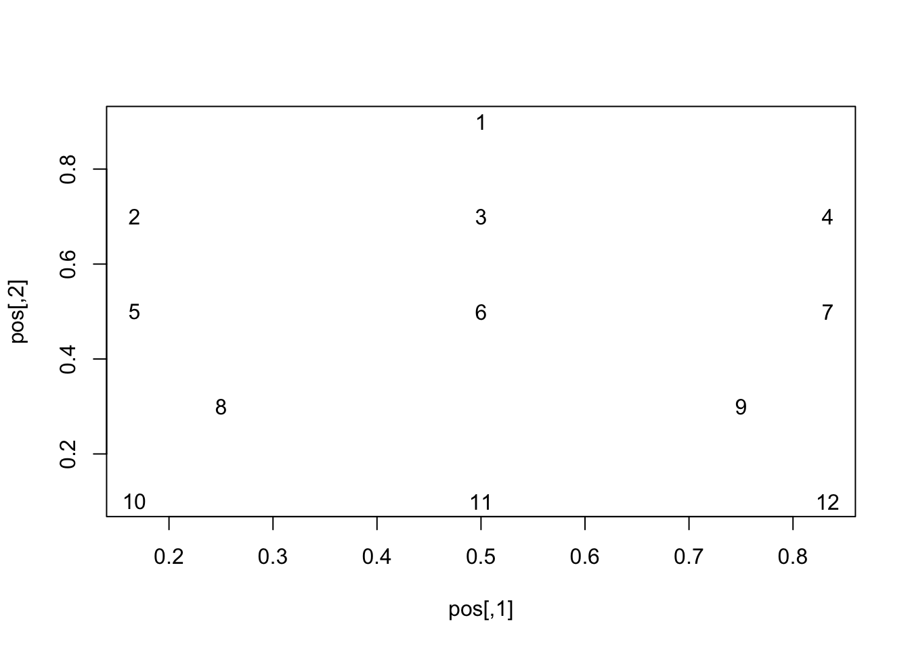
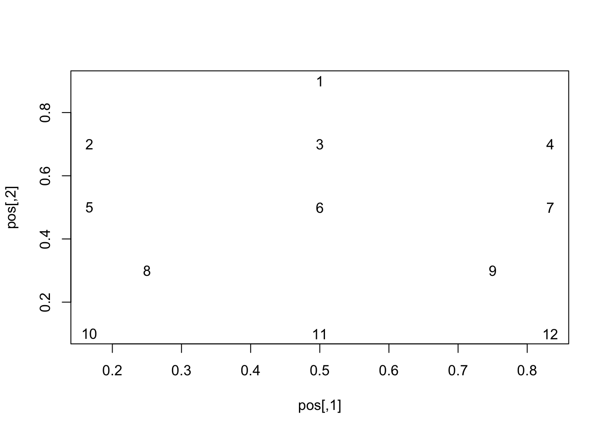

Chapter 14 Testing
This is just an area for me to test out a few things to help create this book.
For instance,
14.1 Flowchart
Some stuff here.
\[\begin{equation} \sum x_{i} \end{equation}\] 

#```{r, echo=FALSE, engine='tikz', out.width='90%', fig.ext=if (knitr:::is_latex_output()) 'pdf' else 'png', fig.cap='Some caption.'}
\begin{document}
\begin{tikzpicture}[node distance=2cm]
\node (start) [startstop] {Start};
\node (in1) [io, below of=start] {Input};
\node (pro1) [process, below of=in1] {Process 1};
\node (dec1) [decision, below of=pro1, yshift=-0.5cm] {Decision 1};
\node (pro2a) [process, below of=dec1, yshift=-0.5cm] {Process 2a text text text text text text text text text text};
\node (pro2b) [process, right of=dec1, xshift=2cm] {Process 2b};
\node (out1) [io, below of=pro2a] {Output};
\node (stop) [startstop, below of=out1] {Stop};
\draw [arrow] (start) -- (in1);
\draw [arrow] (in1) -- (pro1);
\draw [arrow] (pro1) -- (dec1);
\draw [arrow] (dec1) -- node[anchor=east] {yes} (pro2a);
\draw [arrow] (dec1) -- node[anchor=south] {no} (pro2b);
\draw [arrow] (pro2b) |- (pro1);
\draw [arrow] (pro2a) -- (out1);
\draw [arrow] (out1) -- (stop);
\end{tikzpicture}
$$
\begin{split}
\mathrm{Var}(\hat{\beta}) & =\mathrm{Var}((X'X)^{-1}X'y)\\
& =(X'X)^{-1}X'\mathrm{Var}(y)((X'X)^{-1}X')'\\
& =(X'X)^{-1}X'\mathrm{Var}(y)X(X'X)^{-1}\\
& =(X'X)^{-1}X'\sigma^{2}IX(X'X)^{-1}\\
& =(X'X)^{-1}\sigma^{2}
\end{split}
$$
Theorem 14.1 (Pythagorean theorem) For a right triangle, if \(c\) denotes the length of the hypotenuse and \(a\) and \(b\) denote the lengths of the other two sides, we have \[a^2 + b^2 = c^2\]